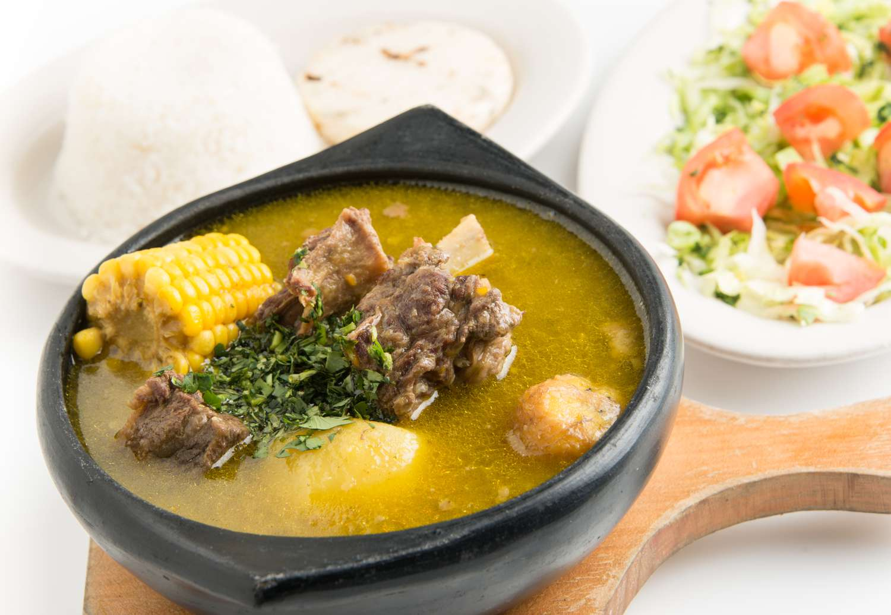

📈 The DR on the World Stage
See how the Dominican Republic compares to other countries across key global indicators. Use the interactive controls to filter and explore the data.

Santiago · Sister Training Leader · 18 Months of Service
I served as a full-time missionary in Santiago, Dominican Republic from July 2024 to December 2025 — one of the most transformative 18 months of my life. I led and trained sister missionaries, discovered a vibrant new culture, and grew in faith and character more than I ever expected.
Below is a window into the beautiful country that became my second home. ¡Que viva la República Dominicana!

Watch this video to get a feel for the stunning landscapes and culture of the Dominican Republic.
See how the Dominican Republic compares to other countries across key global indicators. Use the interactive controls to filter and explore the data.